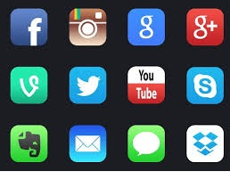

<ion-header [translucent]="true">
  <ion-toolbar>
    <ion-title style="color: #800000;">
      Mary Apps
    </ion-title>
  </ion-toolbar>
</ion-header>

<ion-content [fullscreen]="true">

  <section class="wrapper">
  <ion-header collapse="condense">
    <ion-toolbar>
      <ion-title size="large">Tab 4</ion-title>
    </ion-toolbar>
  </ion-header>
  <ion-grid >
    <ion-row>
      <ion-col>
        
        <p style="color: black; font-size: 11px; font:bold; margin-left:30px"><b>Find a doctor</b></p>
     </ion-col>
     <ion-col>
      
      <p style="color: black; font-size: 11px; font: bold;"><b>Book an <br>appointment</b></p>
   </ion-col>
   <ion-col>
    
    <p style="color: black; font-size: 11px; font:bold;"><b>Medicine reminder</b></p>
 </ion-col>
  </ion-row >
  <ion-row >
   <ion-col>
    
    <p style="color: black; font-size: 11px; font: bold;margin-left:30px"><b>Connect/Social<br> networking</b> </p>
 </ion-col>
</ion-row >
  </ion-grid>
  </section>
</ion-content>
